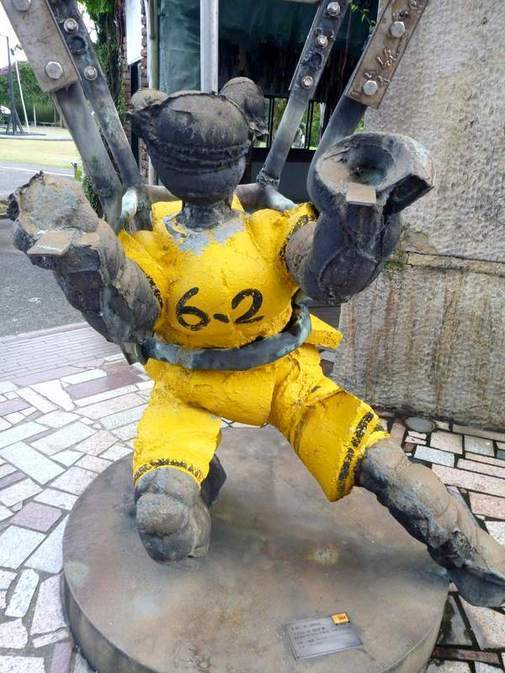

These photos are from my visit to the Juming Sculpture Museum. Ju Ming born in 1938 rose to prominence in the late 70s and early 80. He built this mostly open air museum as his own project
loading...
I recognized this guy without even reading his name tag.
Ju took up T'ai chi on his teachers advice. Some of his sculpting works are based on T'ai chi poses
loading...
loading...

loading...
loading...
Of all my photos this day this is for some reason my favorite.